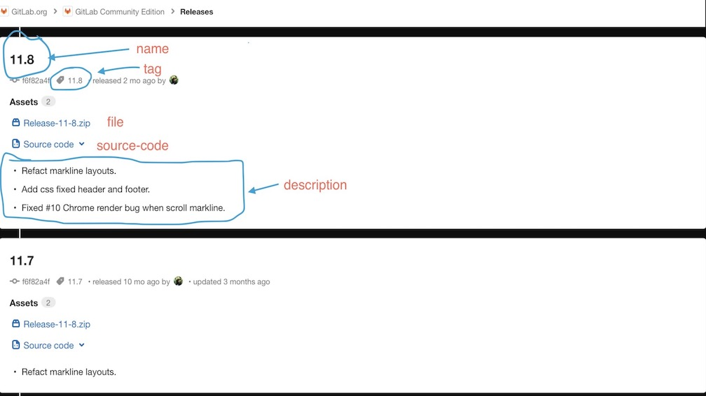
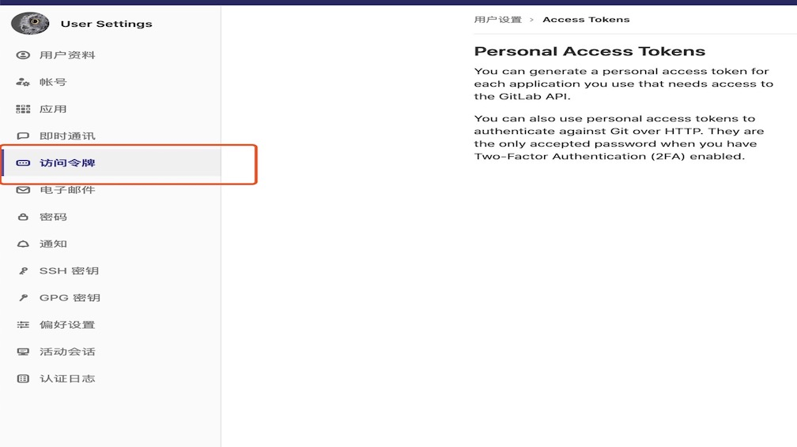
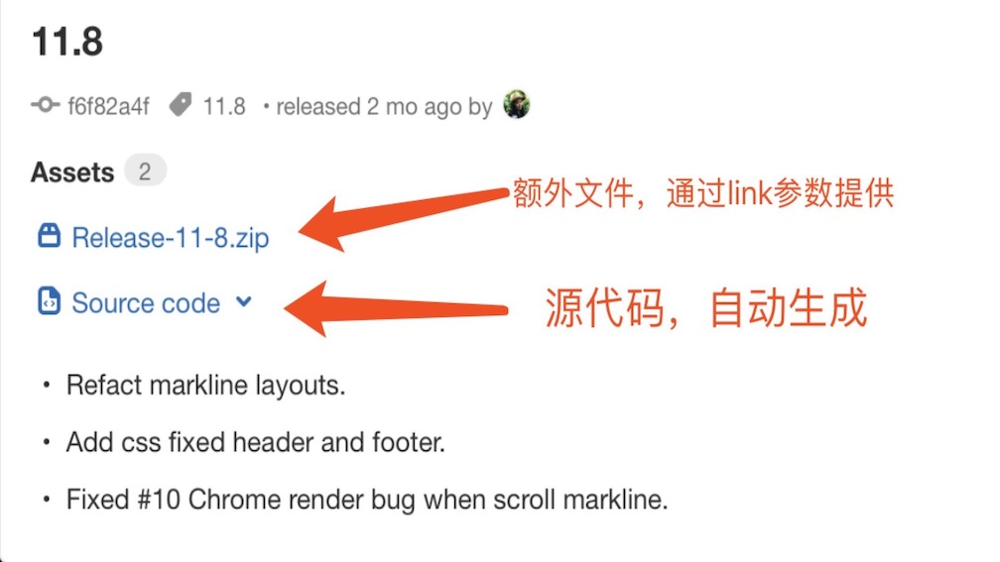
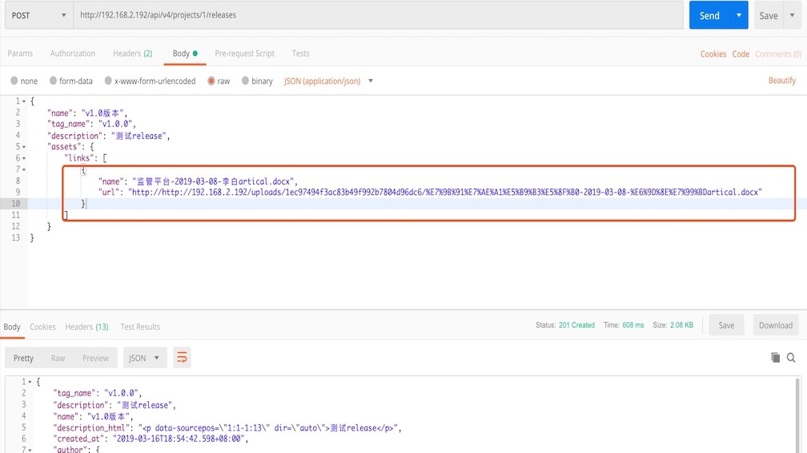

在gitlab中使用release功能发布版本

简述
在Gitlab 11.7版本后，正式加入了release模块，可以将已经成型的项目进行发布，提供源代码或是下载包供访问者下载，如下图。本文讲述如何使用这一功能。

release结构
一份完成的release应当包含如下结构
- release的版本号使用Git tag标签绑定
- release的名称
- release的说明
- release所包含的供用户下载的文件
- 对应release的项目源代码
因此，想要完成一次发布，需要具备以上的元素。
API文档中需要注意的几点
release的发布是借助restapi进行的,release api相关的文档gitlab release document
其中create release的api如下
1 | curl |
其中name,tag_name这些参看文档即可知道是上面所提到的release的名称，标签名称等，这里需要特别讲的是关于header里的PRIVATE-TOKEN 与data里的assets description这三个元素。
private-token
这是访问gitlab-repository的api所需要的一个令牌，可以在用户Settings里找到personal access token然后进行生成，需要注意的是，生成之后的token自己最好记下来，因为后面你无法在其他地方看到这个token了。

assets
从官方文档的例子中看到例子用到的参数如下
1 | { |
这里的参数指的是release所提供的额外的文件，release会自动生成项目对应tag下的源代码压缩包，但是有时候项目想提供给用户的是编译好的或者是处理好的可执行文件，这时候就需要提供额外的下载链接给用户，该api就是用来控制额外的文件的。name是文件名称，url是指下载路径，如下图。

问题来了,这个url按照猜想应当是gitlab服务器中某个文件的地址,并且开放了接口可以让用户自己上传，于是查阅了相关资料，果然是这样的，文档在这里。
通过uploadapi成功上传后会得到一个相对路径，如下
1 | { |
在release的api中需要提供以http/https开头的完整路径，否则校验会不通过。因此需要在create release中需要在这段相对路径前加上完整的路径，例如

description
这里的描述指的是release中的详细说明，支持markdown语法，因此建议大家使用markdown编写changelog之类的内容。
最后
在官方提供的相关api里，其中路径需要注意api/version例如笔者测试的11.8社区版api的版本为v4,那么一份标准路径应当是http://example.com/api/v4/projects/:project-id/xxxxx。
到这里我认为比较容易花费时间去理解的几个参数都已经讲完了，剩下的按照文档里的内容对release进行CURD相关的api操作即可。